Skills 入門：
呼叫、更新、自己做一個
給常用 Claude、但每次都要重講同樣要求的學生和上班族。不用會寫程式。
想跳過原理、直接動手？翻到第 5 頁。
只想用送你的 handout-quiz-plus？翻到第 9 頁，照著裝好就能出題。
- 題目和答案只能來自講義
- 做成可以點選作答的互動測驗
- 選完顯示對錯和解析
- 最後看總分、輸出錯題 PDF
核心概念
Skill 是什麼？
Skill 就是把你交代 AI 的那段要求打包起來。下次不用再講一遍，一句話就好。
把它想成 AI 的食譜
Claude 是廚師，Skill 是食譜，你每次給的講義是食材。食譜寫一次，之後換什麼食材，都照同一套做法做。
把你要的做法、格式、規則寫成一份食譜。
這週是統計，下週是英文，講義每次附上。
題目不同，但版面、規則、解析都照食譜。
食譜可以一直改
- 題目和答案只能來自講義
- 做成可以點選作答的互動測驗
- 選完顯示對錯和解析
- 做完看總分、輸出錯題 PDF
- ＋ 多一個「我不會」選項
哪裡不滿意，跟 Claude 說一句，食譜就多一行。
下次再叫它，新的規則就在裡面了，不用從頭重講。第 8 頁會實際改一次。
Skill 裡可以只有文字規則，也可以附範本、參考資料或小程式。這堂課全部交給 Claude 幫你整理，你不用自己寫程式。
這段重點Skill＝AI 的食譜
核心概念
打開一份食譜：Skill 裡面有什麼
一份 Skill 通常有四個部分。這些不用你自己寫，第 6 頁請 Claude 整理時，它會幫你寫好。
- 題目、答案、解析都只能來自講義
- 做成可以點選作答的互動測驗
- 選完顯示對錯和解析
- 做完看總分，可以輸出錯題 PDF
Claude 怎麼用食譜
Claude 平常先看名字和描述，用到才打開全文。所以描述寫得清楚，比名字取得漂亮更重要。
這段重點名字、描述、做法、附件
核心概念
為什麼要用 Skill？
因為你不用每次都重講一次。同一份測驗，有沒有 Skill 的差別：
- 題目和答案只能來自講義
- 做成可以點選作答的互動測驗
- 選完馬上顯示對錯和解析
- 做完看總分、輸出錯題 PDF
一樣的做法，你只打一句。講義還是每次附上。
跟 Prompt、Project 有什麼不同？三個可以一起用
Prompt（提示詞）
你在這次對話裡打的要求。只寫在這次對話裡的，換一個對話就要重打。Project（專案）
放同一件事的檔案、背景說明和專案指示（例如語氣）。只有在那個 Project 裡的對話用得到。Skill
把某種任務的做法存起來。開著的話，網頁和桌面 app 的任何對話都能用，需要這套做法時 Claude 才讀它。這段重點不用每次重講
實作流程 ① 試做
先請 Claude 做一次
做 Skill 最簡單的方法：先照平常的方式請 Claude 做一次，做到你滿意，再把做法存起來。
- 開新對話，附上一份講義。任何科目都可以，PDF、簡報都行，例如你的通識課簡報。
- 貼上下面這四行要求，送出。
請先讀這份講義，出 10 題選擇題。題目和答案都只能來自講義，不要加講義沒寫的東西。
把測驗做成側邊欄的互動測驗，上面要有進度和目前答對幾題。
我點選項之後，顯示對或錯，並在下面寫解析。
全部做完後顯示總分，可以只重做答錯的題目，也可以一鍵輸出錯題整理和解析的 PDF。
- Claude 做好後，對話右側會打開測驗。點選項作答，下面馬上出現解析；做完可以只重做錯的題目。
AI 出的題目偶爾會出錯，第一次用時抽查幾題，確認答案跟講義一致。
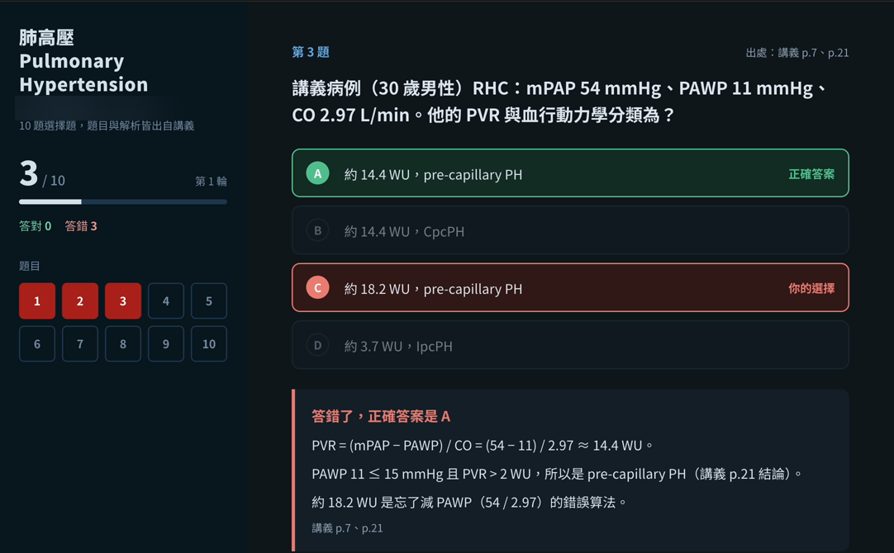
- 按「輸出錯題整理 PDF」。如果跳出「要不要讓它下載檔案」的確認窗，按 Save file（儲存檔案），再選要存在哪。
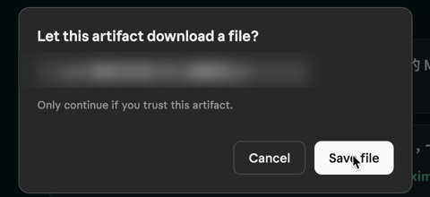
這段重點先做出一次滿意的成果
實作流程 ② 儲存
滿意了，就存成 Skill
不用下載、不用上傳。在同一個對話裡請 Claude 把這次的做法整理起來，按一下就存好。
這份測驗我很滿意。請把我們這次的做法整理成一個 Skill，命名為 handout-quiz。之後我給你講義、說「出題」的時候就用它。
handout-quiz 是「講義出測驗」這個 Skill 的名字，照抄就好，也可以取你自己的名字。
- Claude 整理好，會列出這個 Skill 包了哪些規則，最下面給你一張 Skill 卡片。
- 先讀一下規則，也看它寫的描述（什麼時候該用這個 Skill）。都對了，按卡片上的 Save skill（儲存 Skill）。
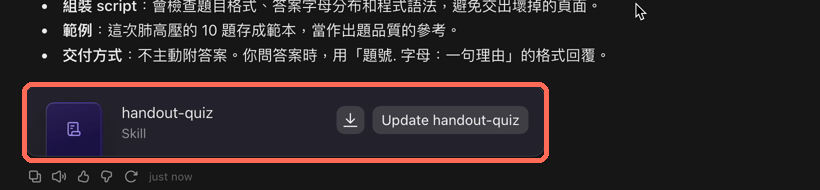
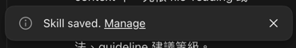
- 想確認的話，到 設定 → 自訂 → Skills。英文介面是 Settings → Customize → Skills，新存的排在最上面。
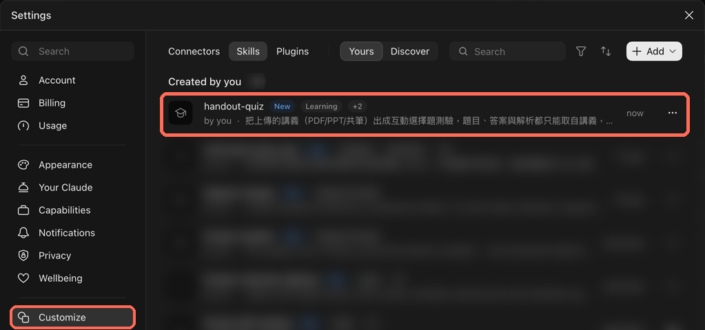
這段重點按 Save skill 就存好
實作流程 ③ 呼叫
開新對話，一句話叫出來
開一個全新的對話，附上這次要考的講義，只打一句。Skill 存的是做法，講義每次還是要給。
① 新對話
附講義＋打一句，送出
② 右側打開測驗
題目（出自講義 p.1）
跟上次同一套做法：10 題、選完看解析
換一份講義，只打一句，出來的測驗做法一樣、版面大致相同。
三種叫法
這段重點做法一樣，你只打一句
實作流程 ④ 更新
想改？加一行規則就好
Skill 不是寫好就固定的。哪裡不順手，直接跟 Claude 說要改什麼，不用重做。
例如我們想多一個「我不會」選項：不確定的題目不用亂猜，選它就直接看解析。
請幫我在 handout-quiz 這個 Skill 改一個地方：加上「我不會」選項。如果我選「我不會」，就當作我選錯。
還想調外觀，再說一句就好，例如「把『我不會』加上紅色底框」。
- Claude 改好，同時更新這次的測驗和你的 Skill。
- 如果出現 Skill 卡片，按 Update（更新）。
- 開一個新對話再叫一次，確認改的地方有出現。
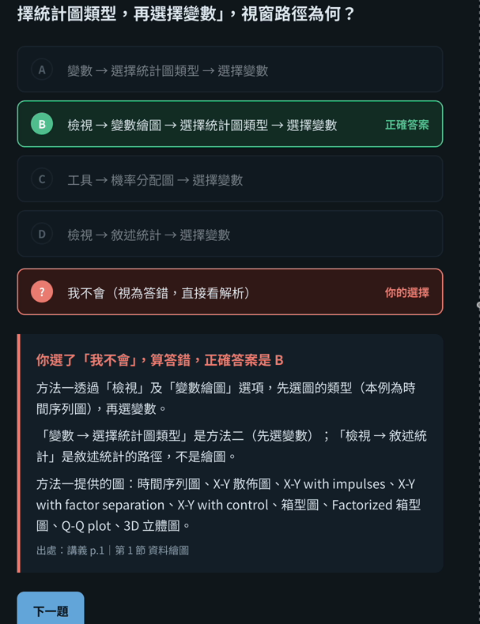
這段重點改一行，結果跟著變
安裝 Skill
送你的加強版：handout-quiz-plus
留言「skills」，我們會私訊你 Google Drive 下載連結。它跟你自己做的 handout-quiz 不同名，兩個可以並存，要用哪個就點名哪個。不限科目。
⚠ 最常卡住的地方：要上傳的是 zip 檔
下載後不要解壓縮。
Mac 的 Safari 可能自動把 zip 解成資料夾：在資料夾上按右鍵 →「壓縮」，得到 zip 再上傳。
安裝兩步（約 1 分鐘）
1 上傳 zip
設定 → 自訂 → Skills，右上「＋新增」→「上傳 Skill」→ 選 zip。
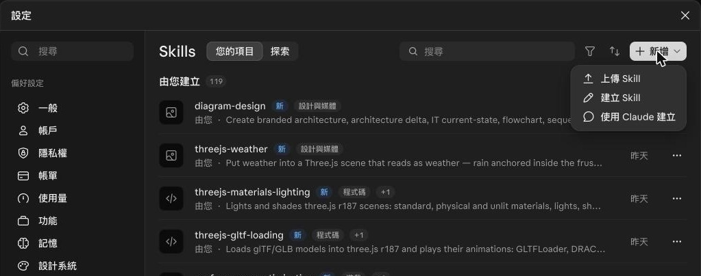
2 確認裝好
清單出現 handout-quiz-plus，旁邊沒有標「已停用」就好。
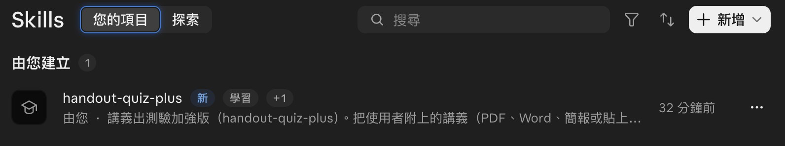
英文介面：Settings → Customize → Skills → 右上「+ Add」。
這段重點上傳的是 zip，不是資料夾
安裝 Skill
開始使用：一句話出題
- 開新對話，把講義（PDF、Word、簡報都可以）拖進對話框。
- 打「用 handout-quiz-plus 出題」送出。
- 等一下，側邊會打開測驗，直接點選作答。
看講義有沒有附題目，出題方式不同
A 講義沒附題目（最常見）
- 只有「AI 出題」一種，10 題，沒有分頁。
- 題目、答案、解析只從講義出，每題標出處頁碼。
- 依各段篇幅分配題數，由淺到深：先考定義，再考比較與應用。
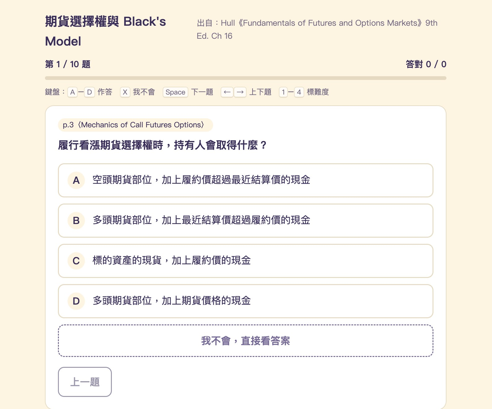
B 講義附考古題或練習題
- 上方有「考古題｜AI 出題」兩個分頁，分開計分。
- 考古題照原題出；講義沒附詳解的，解析會標「解析由 AI 依講義補寫」。
- 合併相似題：開＝同觀念只留一題，標「考過 N 次」和年份，解析最後列出其他年份的變形；關＝全部原題。切換會重新開始考古題。
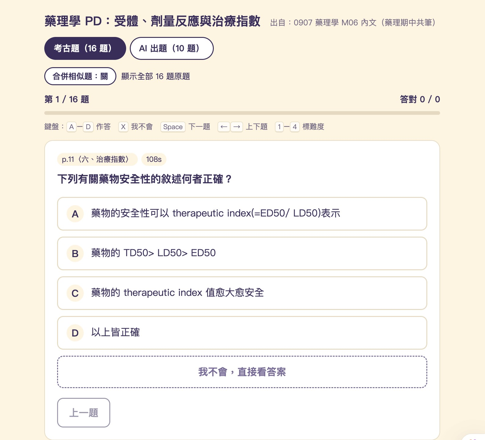
怎樣算「有附題目」：講義裡有「考古題」「歷屆試題」「練習題」「習題」「Exercise」「Quiz」這類段落，而且有答案。
這段重點用 handout-quiz-plus 出題
安裝 Skill
作答、看結果、帶走弱點
A、B 兩種都一樣。
- 選完馬上看解析：對的變綠、錯的變紅，下面寫為什麼，附講義頁碼。
- 「我不會」：D 下面的虛線框，按了直接看答案。不會被標成答錯，而是另標「我不會」；不計分，會列入重做和弱點。
- 自評難度：每題可標 簡單／普通／困難／我不會，做完照這個排複習順序。
鍵盤也能作答
做完之後
- 看總分；「要再看的題目」依 我不會 → 困難 → 答錯 排。
- 可以「只重做錯的」或「全部重做」。
三種帶走弱點的方式
- 錯題整理 PDF：答錯、我不會、標困難的題目，連同你選的、正解、解析。按下會跳出下載確認，按 Save file。
- AI 重點解析 PDF：把不會的觀念重講一遍，附講義原文和記法，最不會的排前面。第一次會問是否允許，等 30–60 秒。
- 複製我的弱點：上面用不了時，按它，回到對話框貼上送出，Claude 會在對話裡做成 PDF。
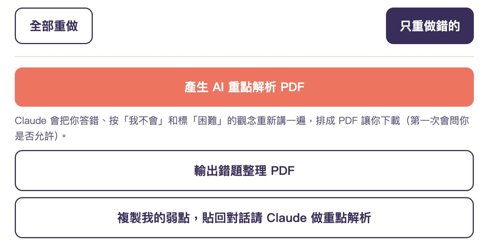
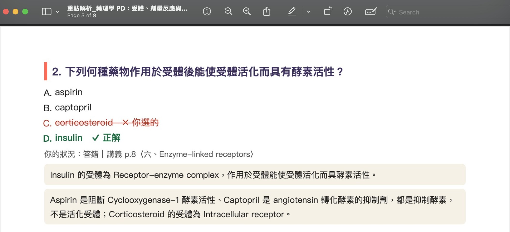
這段重點不會的，帶走複習
安裝 Skill
卡住時怎麼辦
上傳說格式不對
確認傳的是 zip，而且 zip 裡面是一個 handout-quiz-plus 資料夾、資料夾裡是 SKILL.md。資料夾要先按右鍵「壓縮」。
Claude 只列出文字題目，沒有可以點的測驗
請它「照 handout-quiz-plus 的範本做成互動測驗」。
打「/」看不到它
到 Skills 清單看它有沒有標「已停用」；有的話按那一列右邊的「⋯」重新啟用，再開一個新對話。
找不到「上傳 Skill」
先確認 設定 → 功能 →「在雲端執行程式碼」是開的。還是沒有，重新整理頁面或重開 app 再看一次。我們用免費方案實測可以上傳。
AI 重點解析按鈕沒出現
產生失敗或沒出現時，按「複製我的弱點」貼回對話，一樣能做出重點解析。
用量很快就用完
講義一次只給一章；AI 重點解析有需要再按。用量上限的時間，在 設定 → 使用量 可以看到。
跟你自己做的 handout-quiz 差在哪
handout-quiz（影片裡做的）
- 一種出題
- 「我不會」是紅框，算答錯
- 錯題整理 PDF
handout-quiz-plus（送你的）
- AI 出題＋考古題、合併相似題
- 「我不會」是虛線框，另標「我不會」、列入弱點
- 鍵盤、自評難度、AI 重點解析
兩個可以同時裝著；出題時點名你要的那個，例如「用 handout-quiz-plus 出題」。
這段重點留言「skills」領取
建立你的 Skill
什麼事適合做成 Skill？
一句話判斷：你會一直重講、而且每次要求都一樣的事，就適合。
適合
- 常常做：每週、每堂課都要做一次
- 要求固定：格式、步驟、語氣每次都一樣
- 說得清楚：講得出「怎樣才算做好」
- 材料會換：做法一樣，只是每次給的講義、逐字稿不同
不適合
- 只做一次：直接在對話裡問就好
- 每次要求都不一樣：存了也用不上
- 內容要常常更新：Skill 存的是做法，裡面寫死的資料（例如價格表）不會自己更新
- 含密碼或個資：不要寫進 Skill 裡
例子
學習
- 上課錄音的逐字稿 → 重點筆記，固定用同一種標題和表格
- 英文論文 → 中文摘要，一定附研究方法和限制
- 考前把大家一起整理的課堂筆記，濃縮成一頁比較表
工作
- 每週週報：固定段落、固定語氣
- 會議逐字稿 → 決議、待辦、負責人
- 回客戶信：照公司的稱呼和簽名格式
這段重點一直重講、要求一樣的事
建立你的 Skill
做一個你自己的 Skill
照這五步走
- 挑一件適合的事（第 13 頁），先在對話裡請 Claude 做一次（第 5 頁）。
- 不滿意就繼續講，改到你滿意為止。
- 請 Claude 整理成 Skill，讀一下規則和描述，按 Save skill（第 6 頁）。
- 開新對話，換一份材料，一句話叫出來，檢查要求都還在（第 7 頁）。
- 用幾次後哪裡不對，加一行規則（第 8 頁）。
我每週都要請你做＿＿＿＿。這次先照下面的要求做一次：
（貼上你的要求，越具體越好：要什麼格式、什麼一定要有、什麼不要）
我滿意之後，請把這次做法整理成一個 Skill，命名為＿＿＿＿。當我提供＿＿＿＿，並請你＿＿＿＿時，就用這個 Skill。
填好的例子：會議紀錄
我每週都要請你整理會議逐字稿。這次先照下面的要求做一次：
分成「決議」「待辦」「負責人與期限」三段；待辦用核取方塊（□）清單；沒講到期限的寫「未定」；不要加逐字稿裡沒有的內容。
我滿意之後，請把這次做法整理成一個 Skill，命名為 meeting-notes。當我提供會議逐字稿，並請你整理會議紀錄時，就用這個 Skill。
「當我提供……時，就用這個 Skill」會變成 Skill 的描述。寫得越清楚，你之後只要說「整理這份會議」，Claude 就會自己想到它。
這段重點每週重講的事，就是你的第一個 Skill
疑難排解
常見問題
做到這三件，就學會了
- 在 設定 → 自訂 → Skills 看得到你存的 Skill
- 開新對話，只打一句就叫出它
- 改過一次 Skill，新對話裡看得到改的地方
考考你
Claude 整理好、給你一張 Skill 卡片之後，還要做哪一步，Skill 才會存進你的帳號？
- 把對話標題改成 Skill 的名字
- 按卡片上的 Save skill
- 把對話分享出去
- 重新整理頁面
這段重點卡住就回來翻這頁
延伸
你已經會做 Skill 了
接下來，挑一件你每週都要重講的事，做成你的第一個 Skill。
網路上已經有很多現成的 Skill。下一課教你去哪裡找、裝之前看哪裡、怎麼改成你自己的版本。
你做了什麼 Skill。
追蹤 @paradigmai_tw，看下一課。
想看官方說明
- What are skills?｜support.claude.com/en/articles/12512176-what-are-skills
- Use skills in Claude｜support.claude.com/en/articles/12512180-use-skills-in-claude
- How to create custom skills｜support.claude.com/en/articles/12512198-how-to-create-custom-skills
介面名稱與畫面是 2026 年 11 月的 Claude 網頁版與桌面 app。